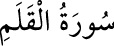

<a name=9834></a><br/>
<b>68- el-KALEM SÛRESİ</b><br/>
<i><b>Mekke’de nâzil olmuştur, 52 âyettir. </b></i><br/>
<i><b>«Nûn» sûresi diye de anılır. </b></i><br/>
<i><b>Adını ilk âyetindeki «kalem» kelimesinden alır.</b></i><br/>
